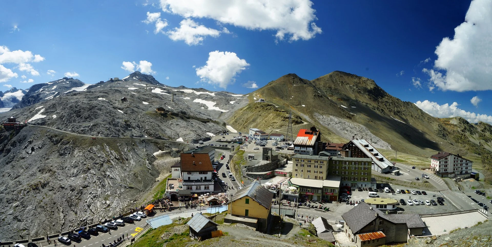
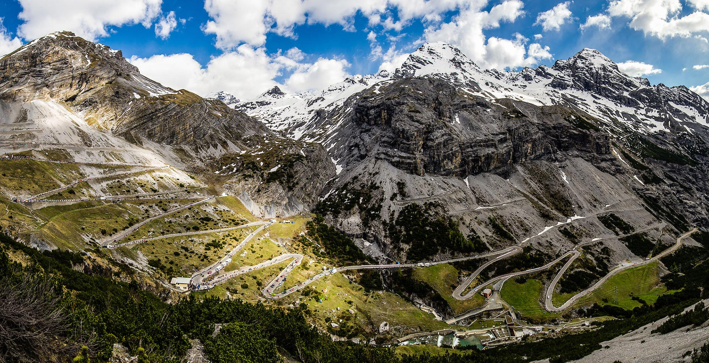
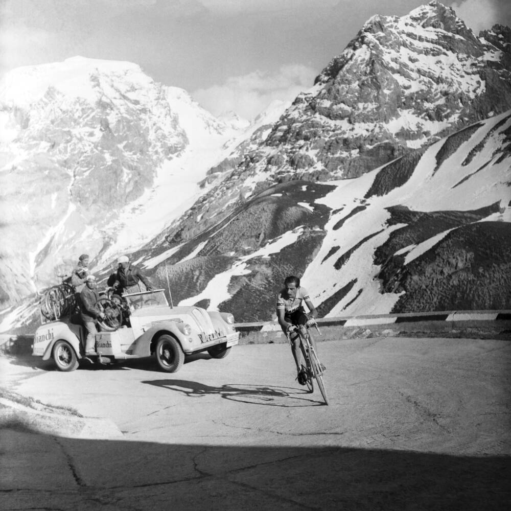

Il Contado di Bormio
Il Passo dello Stelvio è il più alto passo automobilistico d’Italia; coi suoi 2758 m s.l.m. è anche il secondo in tutta Europa. Immerso nella natura incontaminata di una vasta area del Parco Nazionale dello Stelvio, circondato dalle imponenti vette della catena Ortles-Cevedale, il ghiacciaio dello Stelvio è la più vasta area sciabile estiva d’alta quota delle Alpi. Gli oltre venti km di piste tra il Passo e il Monte Cristallo (3450 m s.l.m.) permettono ai grandi campioni dello sci di preparare la stagione agonistica invernale. Oltre al turismo sciistico, il Passo è anche meta ambita da ciclisti, motociclisti, escursionisti e visitatori dei resti della prima guerra mondiale. La strada che giunge al Passo collega Bormio e l’Alta Valtellina con Trafoi e la Val Venosta ed è caratterizzata da ben 48 tornanti sul versante altoatesino e 36 su quello lombardo. Proprio da quest’ultimo è possibile giungere al giogo di Santa Maria o Passo dell’Umbrail (2503 m s.l.m), che permette l’ingresso in Svizzera direttamente in Val Monastero.
La strada e le piste da sci sono aperte da maggio a novembre, durante l’intero periodo invernale il Passo è chiuso su tutti e tre i versanti. La via dello Stelvio esisteva già ai tempi del Medioevo ma si presentava come un sentiero di montagna non carrozzabile e di attraversamento rischioso. Fu grazie all’Imperatore Francesco I d’Austria che divenne carrozzabile perchè volle una nuova strada che potesse collegare la val Venosta con la Valtellina per giungere a Milano, allora territorio austriaco. Il progetto fu affidato all’ingegnere della Provincia di Sondrio, Carlo Donegani (1775-1845), esperto d’alta mon tagna e già progettista del Passo dello Spluga. I lavori iniziarono nel 1822 con l’impiego fino a 2500 uomini tra operai, ingegneri e geologi. Dopo soli 3 anni nel 1825 l’opera fu compiuta e venne inaugurata alla presenza dell’Imperatore. Fino al 1915 il valico era percorso tutto l’anno dalle diligenze grazie all’efficiente opera degli spalatori impiegati durante l’inverno. Durante la prima guerra mondiale fu teatro di aspri scontri tra italiani e austriaci. Dopo la vittoria divenne italiano e perse il suo significato originale di collegamento tra Vienna e Milano, per questo fu decisa la chiusura invernale.
Lo Stelvio è famoso nel mondo del ciclismo dal 1953, anno in cui è stato inserito nel tracciato del Giro d’Italia ed è stato teatro di una delle ultime grandi imprese di Fausto Coppi. Ogni volta che il Giro transita sul passo, questo è chiamato “Cima Coppi” in quanto passo più alto della corsa. Il Passo dello Stelvio è stato traguardo di tappa del Giro d’Italia dal 1953 (vittoria di Coppi). La salita (36 tornanti) è affascinante ed impegnativa. La strada del versante lombardo inizia da Bormio ed è lunga circa 21 km, con pendenze medie del 7%, massima del 12% e dislivello che supera i 1500 m. Ogni anno vengono organizzate gare ciclistiche per amatori sulle strade del passo dello Stelvio.
